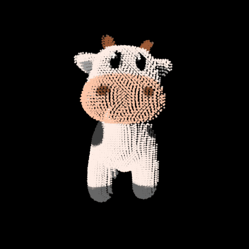
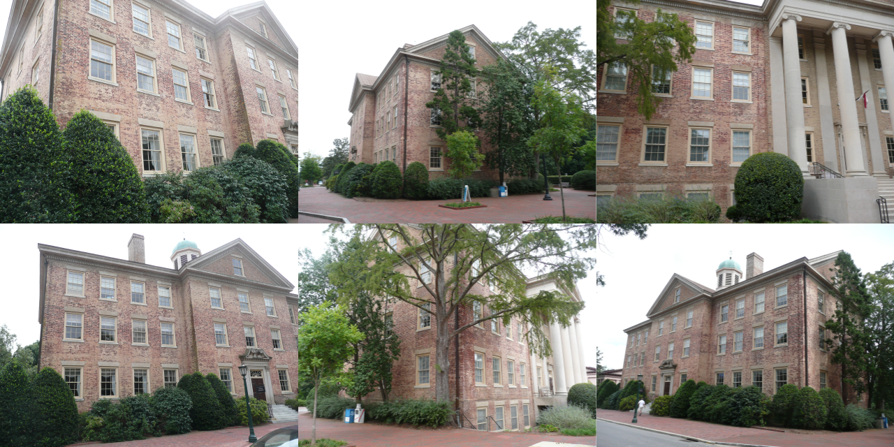
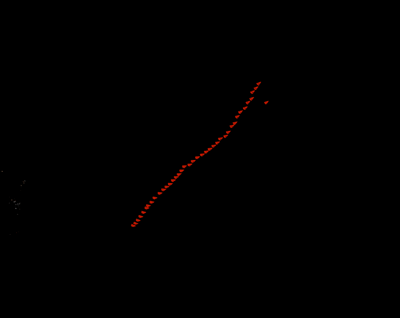

Brief description of your implementation (i.e., the
algorithm followed with relevant equations).
Algorithm:
Read the \(\mathbf{N}\) pairs of
point correspondences and the camera intrinsics.
Compute the essential matrix, \(\mathbf{E}\), using the 8-point algorithm
Normalize \(p_1\) and \(p_2\) per correspondence as follows
\(p_1^{'} =
\mathbf{K}^{-1}_1p_1\) and \(p_2^{'} = \mathbf{K}^{-1}_2p_2\)
Construct a \((\mathbf{N}, 9)\)
matrix \(\mathbf{A}\) as follows
For each point correspondence \((p_1,
p_2)\) where, say \(p_1 =
\begin{bmatrix}u \\ v \\ w\end{bmatrix}\) and \(p_2 = \begin{bmatrix}u^{'} \\ v^{'} \\
w^{'}\end{bmatrix}\)
Here, \(\mathbf{U}_3\) is the hird
column and \(\mathbf{W} = \begin{bmatrix}0
& -1 & 0 \\ 1 & 0 & 0 \\ 0 & 0 &
1\end{bmatrix}\)
To find the best solution, for each candidate
Compute the projection matrix \(\mathbf{P}_2^{'}\) and get 3d points
using the 2d correspondence and \(\mathbf{P}_1\). This can be done through
triangulation.
Construct a \((6, 4)\) matrix \(\mathbf{A}\) as follows
After each addition of images, your 3D reconstruction from
incremental SfM should look something like as shown below. You need to
submit your visualization of the 3D reconstructions at each of the
following stages.
Answer:
Stage
Image
Using Camera #1 and #2
After adding Camera #3
After adding Camera #4

Report the extrinsics R and t of
Camera #3 and Camera #4.
For camera 1 and 2, read the 2d point correspondences and the camera
projection matrices.
Compute the 3D points through triangulation.
Keep track of these 2D-3D correspondences.
For each of the next camera pair where 1 of the camera projection
matrix is unknown
Say, camera a has know projection matrix and camera
b has unknown properties.
Read the 2D point correspondences between a and b.
Of the known 2D-3D correspondences for camera a from
previous iterations/triangulation computations, check how many 2D points
are present in the camera a - camera b 2D point
correspondences.
Thus, we now have some 2D-3D correspondences for camera
b.
Compute Projection matrix \(\mathbf{P}_b\) using these \(\mathbf{N}\) 2D-3D correspondences
Construct a \((\mathbf{N} * 2,
12)\) matrix \(\mathbf{A}\)
For each 2D-3D point correpondence \((p_1,
P_2)\) where, say \(p_1 =
\begin{bmatrix}x \\ y \\ 1\end{bmatrix}\) and \(p_2 = \begin{bmatrix}X \\ Y \\ Z \\
1\end{bmatrix}\),
\(\mathbf{A}_i = \begin{bmatrix} X & Y
& Z & 1 & 0 & 0 & 0 & 0 & - xX & - xY
& - xZ & - x \\ 0 & 0 & 0 & 0 & X & Y &
Z & 1 & - yX & - yY & - yZ & -
y\end{bmatrix}\)
Solve \(\mathbf{Ax}=0\) using
SVD
Once the Projection matrix \(\mathbf{P}_b\) is known, compute additional
3D points using the camera a - camera b 2D point
correspondences through triangulation.
Q3: Reconstruct your
own scene! (40 points)
(A) Generate
reconstructions (20 points)
Multi-view input images.
Answer:
Multi-view images
Output

(B)
Stress test the hyperparameters of COLMAP (20 points)
What happens if we reduce number of input
images?
Input View:
#Views
Output
47
93
140
233
326
As the number of views increases, the quality of the reconstruction
improves. In the example above, the objects of interest have a high
number of discernable features. As can be seen in the case with low
views, while the reconstruction does capture some information, the finer
details are missing and the overall density itself is low. As the number
of views increases, the number of feature matches increases and the
robustness improves as well.
Under what conditions does COLMAP reconstruction
fail?
Input View
Output

In scenarios where subsequent views are textureless or have minimal
features, COLMAP struggles to converge to a 3d model. Also, in scenarios
with transparent surfaces or fluids, the reconstruction suffers. This is
mostly because of reflection and how light gets refracted passing
through such surfaces. Thus, the camera model on its own doesn’t
necessarily apply.
COLMAP also throws an error - ‘No good initial image pair found’.
This shows that it is not able to fit all images into a single model.
And then on it’s attempt to create another model with remaining frames,
it fails.